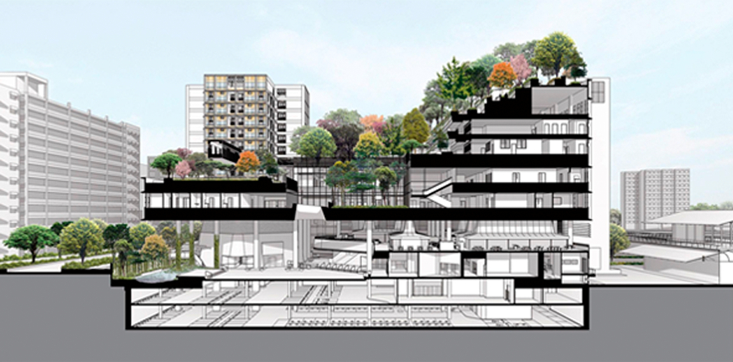

Конечно, главным местом встречи является первый этаж, где расположен Атриум. Он полностью tобщественной гостиной. Пенсионеры приходят сюда, чтобы общаться. Здесь также проводятся всевозможные общественные мероприятия и события, можно присоединиться к сезонным празднованиям, и даже сходить в магазин.
Структура и функции
WOHA были изначально поставлены в жесткие рамки 9000 м² площади и 45 м высоты. Структура поделена на три уровня, которые наслаиваются друг на друга: Атриум (People’s Plaza), Медицинский Центр посередине, и Общественный Парк с квартирами-студиями пожилых обитателей на верхнем уровне. Архитекторы таким образом хотели разнообразить привычное движение внутри здания, где люди находятся в рамках одного этажа, максимум двух. Здесь обитатели призваны передвигаться, заводить новые знакомства и всеми силами включаться в процесс социализации. Недаром квартиры невелики — уже их размер приглашает обитателя выйти из замкнутого пространства и окунуться в кипящую жизнь дома.

Варианты квартир
Помимо жизни сообщества, архитекторы также продумали более близкие отношения — отношения соседей. Между входами в квартиры расположены «приятельские скамейки», которые должны простимулировать жителей на знакомство и дальнейшее общение. Из функциональной начинки: в квартирах продуманы натуральная вентиляция и максимально оптимальный дневной свет. Источники возобновляемой энергии дополняют умный дизайн квартир.
Квартиры идут в двух вариантах:
- Для одиноких людей;
- Для пар.
Не стоит думать, что Kampung Admiralty — это закрытое пространство, если не для избранных, то по крайней мере только для пожилых людей. Здесь присутствуют также зоны, выделенные под дополнительные программы, где дети и молодежь взаимодействуют с пенсионерами. Вместе они могут играть, гулять и обедать.